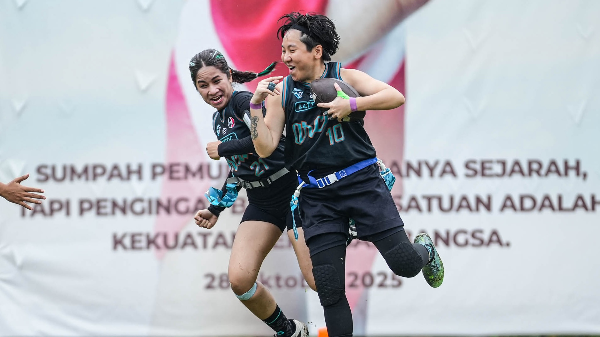

Jakarta Flag Football · The Home of Indonesian Flag Football
JAKARTA'SFLAG FOOTBALLSCENE
The biggest flag football community in Jakarta — where athletes of all levels come to compete, learn, and grow the sport in Indonesia.
The biggest flag football community in Jakarta — where athletes of all levels come to compete, learn, and grow the sport in Indonesia.
Flag football is a non-contact version of American football where instead of tackling, defenders must pull a flag from the ball carrier's belt to end a play. All the strategy, speed, and excitement of the NFL — without the pads.
The sport is fast-growing globally and set to debut at the 2028 Los Angeles Olympics as an official event — making this the best time ever to get into flag football.
In Jakarta, we play 5v5 and 8v8 formats on turf fields, with organized league play, named tournaments, and open scrimmages available for all levels — including women's and youth programs.

More than just a sport. JFF is a community built on competition, inclusion, and the love of the game.

No experience needed. Join us on Reclub to sign up for your first session.